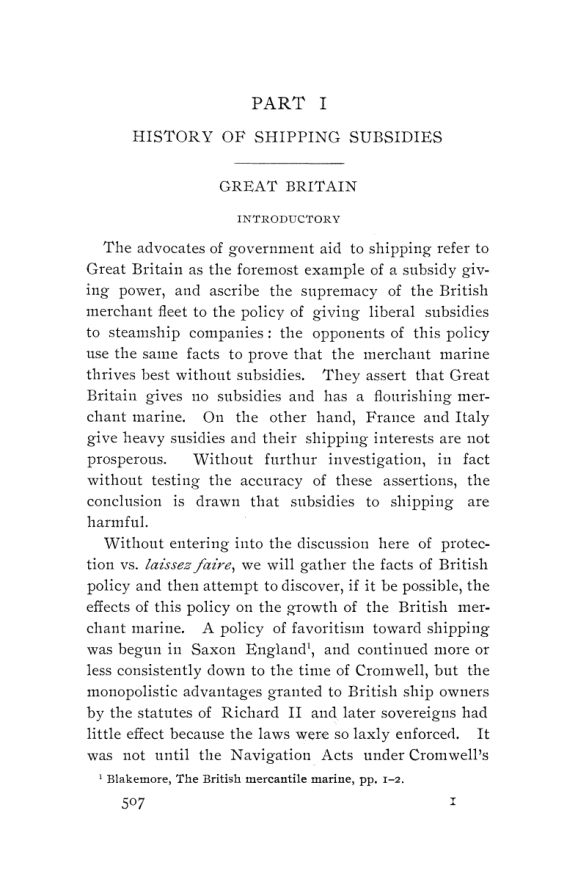

Meeker, 1905: o que os subsídios à navegação compraram
Leitura: 9 min
Em 1905, Royal Meeker reconstituiu, país por país, a história dos subsídios à marinha mercante, dos correios de Cunard às leis americanas, e concluiu que o dinheiro público pouco explicava o sucesso no mar.


No ano fiscal de 1901, a linha postal de Nova York a Cuba recebeu US$ 201.078 em subsídios do governo americano. Transportou 1.995 libras de correspondência de primeira classe e 30.864 libras de outros objetos. Pelas tarifas normais de porte, o serviço valia US$ 2.266,68. Royal Meeker usa o caso para mostrar o defeito que, para ele, acompanha os pagamentos fixos ou por milha navegada: o valor pago se descola do serviço prestado.
History of Shipping Subsidies saiu em 1905 como o nº 3 do vol. 6 da terceira série das Publications of the American Economic Association. A primeira parte percorre a política de cada país: Grã-Bretanha, França, Alemanha, Itália, Áustria, Hungria, Espanha, Rússia, Holanda, Suécia e Noruega, Japão, alguns menores e, por fim, os Estados Unidos. A segunda trata da teoria dos subsídios. O ponto de partida é uma controvérsia: os defensores dos subsídios citam a Grã-Bretanha como o grande exemplo de país que subsidia; os adversários dizem que ela não subsidia e prospera.
A Grã-Bretanha subsidiava ou não?
Pouco, e quase sempre pelo correio. O primeiro prêmio direto à navegação, no reinado de Elizabeth, foi de cinco xelins por tonelada para navios acima de 100 toneladas. Depois disso, segundo o autor, o país nunca concedeu prêmios gerais à navegação nem, salvo essa exceção, prêmios gerais à construção. Quando se fala em subsídio britânico, fala-se das subvenções postais. Houve também prêmios à pesca: em 1750, o Parlamento deu 30 xelins por tonelada aos barcos da pesca do arenque branco. Meeker reproduz a crítica de Adam Smith, para quem o prêmio por tonelagem premiava o tamanho do barco, não o resultado da pesca, e era comum equipar barcos:
“com o único propósito de pescar não o peixe, mas o prêmio” (“for the sole purpose of catching, not the fish, but the bounty”)
O caso central é o de Samuel Cunard. Em 1838-39 ele fechou com o Almirantado, de forma privada, um contrato de sete anos para levar as malas postais duas vezes por mês entre Liverpool, Halifax, Quebec e Boston, por £ 60 mil ao ano. Em 1841 o valor subiu para £ 80 mil; em 1848, para £ 145 mil por 44 viagens. A Great Western Steamship Company chegou a oferecer o serviço pela metade do preço, e a oferta foi recusada porque a Cunard tinha direito anterior. A conclusão do autor é que os pagamentos foram em grande parte prêmios disfarçados e que os subsídios mais atrapalharam do que ajudaram o desenvolvimento natural da navegação a vapor.
Na linha do Oriente, da Peninsular and Oriental, os contratos foram postos em concorrência pública, e Meeker conclui que o governo obteve o serviço mais barato do que de qualquer outro modo. Ainda assim, atribui à concorrência, não ao contrato, os navios maiores e mais rápidos.
O que a França comprou com seus prêmios?
A lei de 29 de janeiro de 1881 deu 60 francos por tonelada bruta aos navios de ferro ou aço construídos na França e um prêmio de navegação de 1,5 franco por tonelada líquida a cada mil milhas navegadas no primeiro ano, decrescente com a idade do navio. Navios comprados no exterior recebiam metade. Para o autor, as justificativas da lei eram fórmulas verbais: na prática, doações do Tesouro a particulares, sem retorno direto ao governo.
A lei de 1893 deu tal impulso aos veleiros que, em seis anos, a tonelagem a vela recuperou quase tudo o que perdera nos catorze anos anteriores a 1896. Meeker atribui o resultado inteiramente à lei e o descreve como a inversão da ordem natural: o transportador mais eficiente substituído pelo menos eficiente. Nas subvenções postais, os navios tinham de ser construídos em estaleiros franceses, com custo inicial estimado de 25% a 50% acima do inglês, e os contratos não passavam por concorrência. O balanço final do capítulo:
“uma gigantesca ‘indústria nascente’ cuja fraqueza aumenta com o seu crescimento” (“a giant ‘infant industry’ whose weakness increases with its growth”)
Os outros países tiveram melhor sorte?
A Alemanha começou tarde. A lei de 6 de abril de 1885 previu contratos de quinze anos para linhas à Ásia Oriental, à Austrália e um ramal entre Alexandria e Trieste, com subsídio anual total de 4,4 milhões de marcos. Na Itália, o autor vê o problema nos impostos e na falta de carvão, e julga que uma tributação razoável faria o que os prêmios não fizeram. Na Áustria, distingue a frota cara da frota valiosa: o valor de mercado subiu enquanto a capacidade de gerar renda caiu.
No Japão, de 1890 a 1899, o comércio exterior japonês mais que quadruplicou, e a participação de navios japoneses nesse comércio passou de cerca de 22,2% para 36,4%. Meeker lembra que a navegação já crescia na mesma velocidade antes da lei de 1896 e conclui que o governo apenas deu forma a empreendimentos que os capitalistas já faziam.
Como foi a experiência americana?
O primeiro período começa com a lei de 3 de março de 1845. O contrato mais famoso foi o da linha Collins, entre Nova York e Liverpool, que entrou em operação em 1º de junho de 1850 com US$ 19.250 por viagem, para vinte viagens por ano. Em 1852, o valor subiu para US$ 33 mil por viagem, para 26 viagens. Depois da perda de dois navios, o Arctic e o Pacific, o Congresso voltou ao valor original em 1856; dois anos depois, os contratos foram cancelados e a linha acabou. Segundo o autor, a experiência com a Collins custou cerca de US$ 4 milhões.
Para Meeker, os dados de comércio com o Brasil, a China e o Japão não mostram ligação com o subsídio. Ele atribui o declínio da marinha americana não à Guerra Civil, mas à passagem da madeira ao ferro e da vela ao vapor, somada ao impulso que a guerra deu às indústrias internas. A lei de 1891, do senador Frye, pagava até US$ 4 por milha aos vapores de primeira classe; o caso de Cuba é um de seus resultados.
Os projetos seguintes foram maiores. Pelo cálculo do capitão W. W. Bates citado no texto, o projeto Hanna, de 1898, custaria US$ 3.222.268 em 1900 e US$ 48.374.015 em 1908, se o país chegasse a 80% da navegação do seu comércio exterior. Um novo projeto Frye passou no Senado em 14 de março de 1902, mas não na Câmara. O autor prefere reformar as leis de navegação.
Subsídio é melhor ou pior que tarifa?
Na parte teórica, a tarifa protetora reserva o mercado interno, eleva o preço e reduz a demanda; o prêmio reduz o custo, baixa o preço e amplia a demanda. Por isso, do ponto de vista do consumidor, Meeker considera o prêmio mais defensável que a tarifa. A exceção: quando o preço mais baixo beneficia sobretudo consumidores estrangeiros, o prêmio pode ser a forma mais desperdiçadora de proteção.
O autor rejeita a ideia de que mais navios significam fretes mais baixos. Cada navio é capital que precisa render juros; cada navio supérfluo, nas palavras dele, é um indigente sustentado pela navegação ativa. Os prêmios estrangeiros, diz, mantiveram em serviço tonelagem ineficiente.
O capítulo final é de considerações éticas. Com Marshall, Meeker adverte que, num setor que recebe prêmio, as pessoas passam a cuidar menos do próprio negócio e mais de quem controla os prêmios. Sustenta que, mesmo que um subsídio bem administrado fosse benéfico, seria impossível livrar o Legislativo da influência dos interessados. Termina com a justiça distributiva:
“poderíamos suportar um pouco menos de ‘prosperidade’ e um pouco mais de justiça distributiva” (“we could endure a little less ‘prosperity’ and a little more distributive justice”)
Na minha leitura
Na minha leitura, o método é a força e o limite do estudo. Meeker compara antes e depois de cada lei, país por país, com estatísticas oficiais que ele mesmo diz não conseguir conciliar no caso francês. Isso não isola o efeito do subsídio: em quase todos os países a passagem ao ferro e ao vapor, o custo do carvão e o comércio de cada época pesam mais que a lei. O mérito está em perguntar, em cada caso, o que teria acontecido sem o pagamento, e em mostrar que a resposta frequente é: quase o mesmo.
O argumento mais duradouro é a distinção entre frota cara e frota valiosa. Subsídio que mede sucesso por tonelagem sob a bandeira nacional pode aumentar a tonelagem e reduzir a capacidade de competir. A segunda lição é institucional: contratos sem concorrência transformam o custo do serviço em quanto o contratado precisar, e cada aumento cria a expectativa do próximo. São os mesmos dilemas de qualquer política setorial: medir o resultado pelo que se compra, não pelo que se gasta.
Glossário
- Subvenção postal (mail subvention)
- pagamento do governo a uma companhia de navegação por levar as malas postais em linha regular.
- Prêmio à construção (construction bounty)
- valor pago por tonelada ao navio construído no país.
- Prêmio à navegação (navigation bounty)
- valor pago por tonelada e por distância navegada sob a bandeira nacional.
- Tonelada bruta e líquida
- medidas de volume do navio; a líquida exclui espaços não usados para carga ou passageiros.
- Indústria nascente (infant industry)
- argumento de que a proteção temporária permite a um setor novo alcançar os concorrentes estrangeiros.
- Prêmio oculto à exportação
- efeito de uma tarifa que permite ao produtor protegido cobrar caro no mercado interno e vender barato no externo.
Fontes
- History of Shipping Subsidies (pp. 1–229). JSTOR · Internet Archive (PDF)
- Sumário da edição no JSTOR: Publications of the American Economic Association, 3ª série, vol. 6, nº 3.
Documento em domínio público (EUA, publicado antes de 1931), via JSTOR Early Journal Content e Internet Archive. Resumo e comentário do autor deste site, sem afiliação com a American Economic Association. Encontrou um erro? Escreva: a correção é publicada no próprio texto, com data.
← Nº 74 · Chicago, 1904 (II): trustes, ferrovias e preferência imperial Nº 76 · Fairchild, 1905: vinte anos de lei fabril em Nova York →